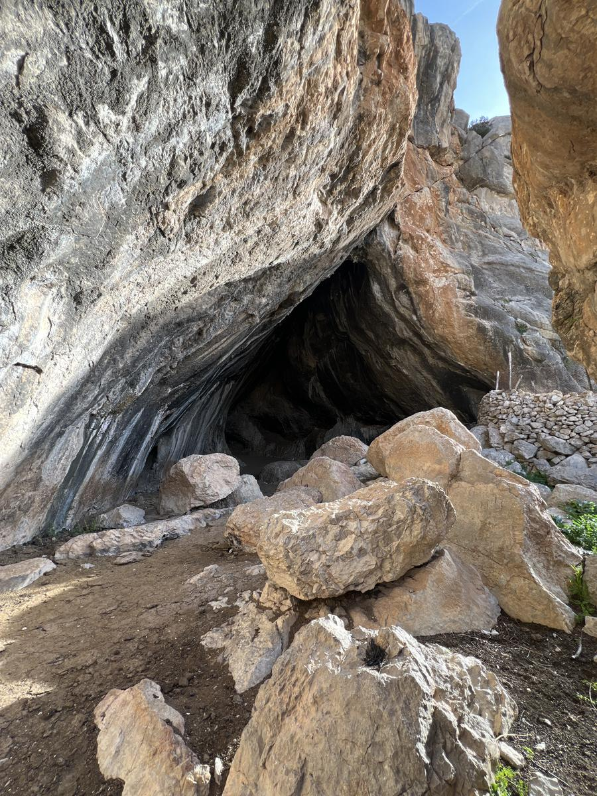

NUESTRA HISTORIA
Os damos la bienvenida a nuestro pueblo, La Guardia de Jaén. Un pueblo muy importante debido a su situación geográfica, llegando a ser la defensa cristiana de la provincia de Jaén. Nos adentraremos en sus calles, sus rincones, sus lugares más emblemáticos, así como disfrutaremos de los sabores de su rica gastronomía. Te invitamos a dar un paseo por nuestro municipio. Descubriremos nuestra historia a través de nuestros monumentos. ¿Nos acompañas ?
VER MÁS


MAPA TURÍSTICO
Este mapa detallado y colorido, resalta los principales monumentos y sitios de interés de La Guardia de Jaén, sirviendo como guía visual para los visitantes.
Destaca la Iglesia de San Pedro, un templo central de arquitectura tradicional andaluza, junto a plazas como la de San Pedro y la de la Constitución, marcadas en tonos naranjas para las zonas históricas y peatonales. También se señalan el Antiguo Convento de Santo Domingo, el Lavadero Público de la II República y el conjunto histórico Plaza Isabel II, todos representados como puntos clave del patrimonio local. Áreas recreativas y naturales rodean el núcleo urbano, ofreciendo vistas panorámicas, mientras carreteras grises y negras facilitan el acceso. Los símbolos rojos indican museos, ermitas y otros lugares históricos.

OTROS LUGARES DE INTERÉS
